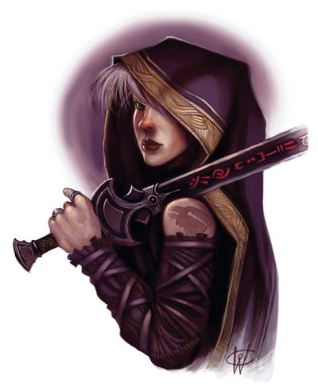

Multiclassage
Le multiclassage permet de gagner des niveaux dans des classes différentes. Cela permet ainsi d'associer les capacités de ces classes, de manière à réaliser un concept de personnage qu'on ne pourrait pas réaliser avec les options d'une classe standard. Avec cette règle, vous avez l'option d'ajouter un niveau dans une nouvelle classe chaque fois que vous montez de niveau, au lieu de gagner un niveau dans votre classe actuelle. Les niveaux de toutes vos classes sont additionnés ensemble pour déterminer le niveau de votre personnage. Par exemple, si vous avez trois niveaux de magicien et deux niveaux de guerrier, vous êtes un personnage de niveau 5.
Au fur et à mesure que vous montez de niveau, vous pouvez rester un membre de votre classe originale qui possède juste quelques niveaux dans une autre classe, ou vous pouvez changer complètement de carrière, en laissant la première classe de côté. Vous pouvez même progresser dans une troisième ou quatrième classe. En comparaison à une classe unique de niveau équivalent, vous sacrifiez une partie de votre spécialité en échange de plus de versatilité.
Prérequis
EXEMPLE DE MULTICLASSAGE
Gary joue un guerrier de niveau 4. Lorsque son personnage gagne assez de points d'expérience pour parvenir au niveau 5, Gary décide que son personnage va se multiclasser au lieu de continuer à progresser dans sa classe de guerrier. Le guerrier de Gary a passé beaucoup de temps avec le roublard de Dave, et a même déjà travaillé pour la guilde des voleurs locale en tant qu'homme de main. Gary décide que son personnage se multiclasse avec la classe de roublard, et donc que son personnage devient un guerrier de niveau 4 et un roublard de niveau 1 (noté guerrier 4/roublard 1).
Quand son personnage gagne assez de points d'expérience pour parvenir au niveau 6, il peut décider d'ajouter un niveau de guerrier (devenant alors un guerrier 5/roublard 1), un niveau de roublard (devenant alors un guerrier 4/roublard 2), ou un niveau dans une troisième classe, peut-être en s'essayant à la magie grâce au mystérieux tome dont il a récemment fait acquisition (devenant alors un guerrier 4/roublard 1/magicien 1).
Pour avoir accès à une nouvelle classe, vous devez posséder les valeurs de caractéristiques requises par votre classe actuelle et par la nouvelle classe, comme indiqué dans le tableau des Prérequis pour le multiclassage. Par exemple, un barbare décidant de se multiclasser dans la classe de druide doit avoir des valeurs de Force et de Sagesse de 13 ou plus. Dépourvu de la formation complète que reçoit un personnage débutant, vous devez assimiler rapidement les capacités de votre nouvelle classe, et ceci demande des aptitudes naturelles qui sont reflétées par des valeurs de caractéristiques au-dessus de la moyenne.
| Classe | Valeur minimum de caractéristique |
| Barbare | Force 13 |
| Barde | Charisme 13 |
| Clerc | Sagesse 13 |
| Druide | Sagesse 13 |
| Ensorceleur | Charisme 13 |
| Guerrier | Force 13 ou Dextérité 13 |
| Magicien | Intelligence 13 |
| Moine | Dextérité 13 et Sagesse 13 |
| Occultiste | Charisme 13 |
| Paladin | Force 13 et Charisme 13 |
| Rôdeur | Dextérité 13 et Sagesse 13 |
| Roublard | Dextérité 13 |
Points d'expérience
Le coût en points d'expérience (PX) pour monter de niveau est toujours basé sur la somme de vos niveaux de personnage (voir Au-delà du niveau 1), et non pas en fonction de votre niveau dans une classe spécifique. Donc, si vous êtes un clerc 6/guerrier 1, vous devez gagner assez de PX pour atteindre le niveau 8 avant de pouvoir prendre votre second niveau de guerrier ou votre septième niveau de clerc.
Points de vie et dés de vie
Vous gagnez les points de vie de votre nouvelle classe comme cela est décrit pour les niveaux au-delà du premier. Vous gagnez les points de vie du niveau 1 seulement quand vous êtes un personnage de niveau 1. Vous additionnez les dés de vie conférés par toutes vos classes pour calculer votre réservoir de dés de vie. Si les dés de vie sont du même type, vous pouvez tout simplement les additionner ensemble. Par exemple, le guerrier et le paladin tirent des d10, donc si vous êtes un paladin 5/guerrier 5, vous avez 10 dés de vie. Si vos classes vous donnent des dés de vie de types différents, vous devez les noter séparément. Si vous êtes un paladin 5/clerc 5 par exemple, vous avez cinq d10 dés de vie et cinq d8 dés de vie.
Bonus de maîtrise
Votre bonus de maîtrise est toujours basé sur la somme de vos niveaux de personnage (voir Au-delà du niveau 1), et non pas en fonction de votre niveau dans une classe spécifique. Par exemple, si vous êtes un guerrier 3/voleur 2, vous avez le bonus de maîtrise d'un personnage de niveau 5, qui est donc égal à +3.
Maîtrises
Quand vous gagnez un niveau dans une classe autre que votre première classe, vous ne recevez qu'une partie des maîtrises de départ de cette nouvelle classe, ainsi que le montre le tableau ci-dessous.
| Classe | Maîtrises gagnées |
| Barbare | Boucliers, armes courantes, armes de guerre |
| Barde | Armure légère, une compétence de votre choix, un instrument de musique de votre choix |
| Clerc | Armure légère, armure intermédiaire, boucliers |
| Druide | Armure légère, armure intermédiaire, boucliers (un druide n'utilise pas d'armure ou de bouclier en métal) |
| Ensorceleur | — |
| Guerrier | Armure légère, armure intermédiaire, boucliers, armes courantes, armes de guerre |
| Magicien | — |
| Moine | Armes courantes, épée courte |
| Occultiste | Armure légère, armes courantes |
| Paladin | Armure légère, armure intermédiaire, boucliers, armes courantes, armes de guerre |
| Rôdeur | Armure légère, armure intermédiaire, boucliers, armes courantes, armes de guerre, une compétence choisie dans la liste de la classe |
| Roublard | Armure légère, une compétence choisie dans la liste de la classe, outils de voleur |
Capacités de classe
Lorsque vous gagnez un nouveau niveau dans une classe, vous bénéficiez des nouvelles capacités acquises à ce niveau. En revanche, vous ne recevez pas l'équipement de départ de la classe et certaines capacités sont modifiées par des règles additionnelles lors d'un multiclassage : Attaque supplémentaire, Conduit divin, Défense sans armure et Incantation.
Attaque supplémentaire
Si vous bénéficiez de la capacité de classe Attaque supplémentaire grâce à plusieurs classes, ces capacités ne se cumulent pas. Vous ne pouvez pas réaliser plus de deux attaques grâce à cette capacité à moins qu'il n'en soit dit autrement (telle la version d'Attaque supplémentaire du guerrier). De manière similaire, la manifestation occulte Lame assoiffée de l'occultiste ne vous accorde pas de nouvelle attaque si vous avez déjà accès à Attaque supplémentaire.
Conduit divin
Si vous avez déjà la capacité de Conduit divin et que vous prenez un niveau dans une classe qui propose aussi cette capacité, vous gagnez l'effet de Conduit divin conféré par cette classe, mais vous ne gagnez pas d'utilisation supplémentaire. Vous ne gagnez d'utilisations supplémentaires que lorsque vous atteignez un niveau de classe qui vous en confère explicitement. Par exemple, si vous êtes un clerc 6/paladin 4, vous pouvez utiliser Conduit divin deux fois entre chaque repos puisque vous possédez assez de niveau de clerc pour prétendre à plusieurs utilisations. Lorsque vous utilisez cette capacité, vous pouvez choisir n'importe quel effet de Conduit divin auquel vos classes vous donnent accès.
Défense sans armure
Si vous possédez la capacité de Défense sans armure, vous ne pouvez pas en bénéficier encore grâce à une autre classe.
Incantation
Votre capacité de lanceur de sorts dépend en partie de vos niveaux combinés dans toutes vos classes de lanceurs de sorts et en partie de votre niveau individuel dans chacune de ces classes. À partir du moment où vous avez accès à la capacité Incantations grâce à plusieurs classes, utilisez les règles ci-dessous. Si vous êtes multiclassé, mais que vous avez accès à la capacité Incantations seulement grâce à une de vos classes, utilisez les règles telles qu'elles sont décrites pour votre classe.
Sorts connus et Sorts préparés. Vous choisissez les sorts que vous connaissez et que vous préparez pour chacune de vos classes individuellement, comme décrit dans la description de la classe. Par exemple, si vous êtes un rôdeur 4/magicien 3, vous connaissez trois sorts de rôdeur de niveau 1 grâce à vos niveaux dans la classe de rôdeur. En tant que magicien de niveau 3, vous connaissez trois sorts mineurs de magicien et votre livre de sorts contient dix sorts de magicien, dont deux (ceux que vous avez gagnés en atteignant le niveau 3 de magicien) pouvant être des sorts de niveau 2. Si votre valeur d'Intelligence est de 16, vous pouvez préparer six sorts de magicien à partir de votre livre de sorts.
Chaque sort que vous connaissez et que vous préparez est associé à une de vos classes, et vous utilisez la capacité Incantations de cette classe lorsque vous jetez un sort. De même, un focaliseur, tel qu'un symbole sacré, ne peut être utilisé que pour les sorts de la classe associée à ce focaliseur.
Si un de vos sorts mineurs augmente de pouvoir à des niveaux plus élevés, cette augmentation est basée sur le niveau de votre personnage, et non pas sur votre niveau dans une classe spécifique.
Emplacements de sorts. Vous déterminez vos emplacements de sorts disponibles en additionnant tous vos niveaux de classe de barde, clerc, druide, ensorceleur et magicien, la moitié (arrondie à l'inférieur) de vos niveaux de classe de paladin et de rôdeur, et le tiers (arrondi à l'inférieur) de vos niveaux de classe de guerrier et de voleur s'ils ont accès aux capacités de chevalier occulte ou d'escroc arcanique. Utilisez ce total pour déterminer vos emplacements de sorts en consultant la table ci-dessous.
Si vous avez des niveaux dans plus d'une classe de lanceur de sorts, cette table pourrait vous donner des emplacements de sorts d'un niveau plus élevé que les sorts que vous connaissez ou que vous pouvez préparer. Vous pouvez utiliser ces emplacements, mais seulement pour lancer vos sorts de niveaux inférieurs. Si un sort de niveau inférieur que vous lancez, comme mains brûlantes, a un effet accru quand il est lancé en utilisant un emplacement de niveau supérieur, vous pouvez utiliser l'effet amélioré, même si vous ne disposez pas de sorts de ce niveau supérieur. Par exemple, en suivant le cas précédant du personnage rôdeur 4/magicien 3, vous êtes considéré comme un lanceur de sorts de niveau 5 pour déterminer vos emplacements de sorts : vous avez droit à quatre emplacements de sorts de niveau 1, trois emplacements de sorts de niveau 2, et deux emplacements de sorts de niveau 3. Par contre, vous ne connaissez aucun sort de niveau 3, ni aucun sort de rôdeur de niveau 2. Vous pouvez quand même utiliser les emplacements de sorts de ces niveaux pour lancer des sorts que vous connaissez, et même potentiellement en augmenter leur efficacité.

| Niv | 1 | 2 | 3 | 4 | 5 | 6 | 7 | 8 | 9 |
| 1 | 2 | - | - | - | - | - | - | - | - |
| 2 | 3 | - | - | - | - | - | - | - | - |
| 3 | 4 | 2 | - | - | - | - | - | - | - |
| 4 | 4 | 3 | - | - | - | - | - | - | - |
| 5 | 4 | 3 | 2 | - | - | - | - | - | - |
| 6 | 4 | 3 | 3 | - | - | - | - | - | - |
| 7 | 4 | 3 | 3 | 1 | - | - | - | - | - |
| 8 | 4 | 3 | 3 | 2 | - | - | - | - | - |
| 9 | 4 | 3 | 3 | 3 | 1 | - | - | - | - |
| 10 | 4 | 3 | 3 | 3 | 2 | - | - | - | - |
| 11 | 4 | 3 | 3 | 3 | 2 | 1 | - | - | - |
| 12 | 4 | 3 | 3 | 3 | 2 | 1 | - | - | - |
| 13 | 4 | 3 | 3 | 3 | 2 | 1 | 1 | - | - |
| 14 | 4 | 3 | 3 | 3 | 2 | 1 | 1 | - | - |
| 15 | 4 | 3 | 3 | 3 | 2 | 1 | 1 | 1 | - |
| 16 | 4 | 3 | 3 | 3 | 2 | 1 | 1 | 1 | - |
| 17 | 4 | 3 | 3 | 3 | 2 | 1 | 1 | 1 | 1 |
| 18 | 4 | 3 | 3 | 3 | 3 | 1 | 1 | 1 | 1 |
| 19 | 4 | 3 | 3 | 3 | 3 | 2 | 1 | 1 | 1 |
| 20 | 4 | 3 | 3 | 3 | 3 | 2 | 2 | 1 | 1 |
Magie de pacte. Si vous bénéficiez à la fois des capacités Incantations et Magie de pacte de la classe d'occultiste, vous pouvez utiliser les emplacements de sorts gagnés grâce à la capacité Magie de pacte pour lancer des sorts que vous connaissez ou que vous avez préparés des classes ayant la capacité Incantations, et vous pouvez utiliser les emplacements de sorts gagnés grâce à la capacité Incantations pour lancer les sorts d'occultiste que vous connaissez.
Traduit par Pils